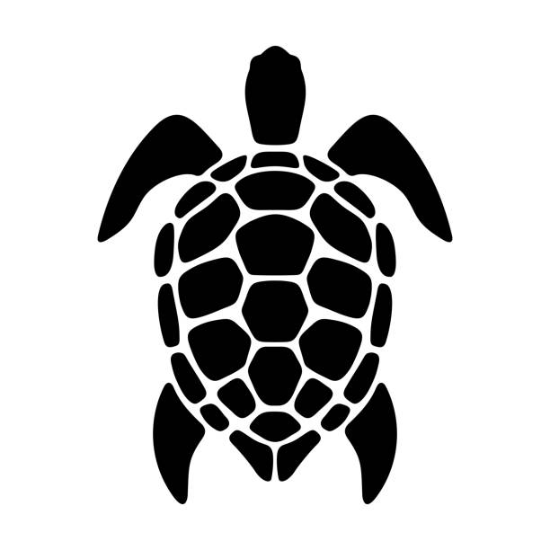

About!
At Kind Turtle Plushies, we believe in the magic of cuddly companions and the importance of protecting our oceans. Our plush sea creatures, including turtles, dolphins, and whales, are handcrafted with care using recycled materials to reduce waste and promote sustainability. Every plushie is designed to be soft, huggable, and full of personality, making them the perfect gift for ocean lovers of all ages. Beyond just a toy, each purchase comes with an interactive adoption certificate and an educational card, helping to raise awareness about marine life conservation.
Our mission is to create eco-friendly plushies that make a difference. We strive to inspire a love for the ocean by offering high-quality, sustainable products that are both adorable and impactful. Whether you’re looking for a special gift, a unique collectible, or a way to support environmental efforts, Kind Turtle Plushies is here to bring comfort and consciousness together. With every purchase, you're not just getting a plushie—you’re supporting ocean conservation and helping to protect the beautiful creatures that call it home.
Click here to go home.